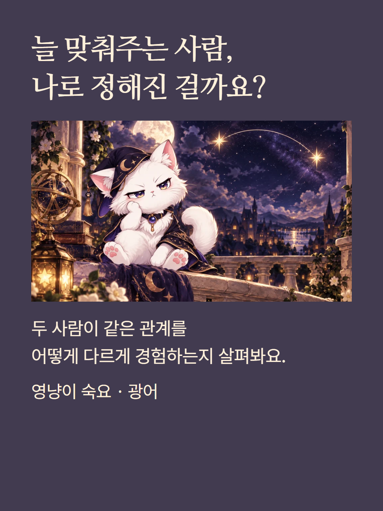
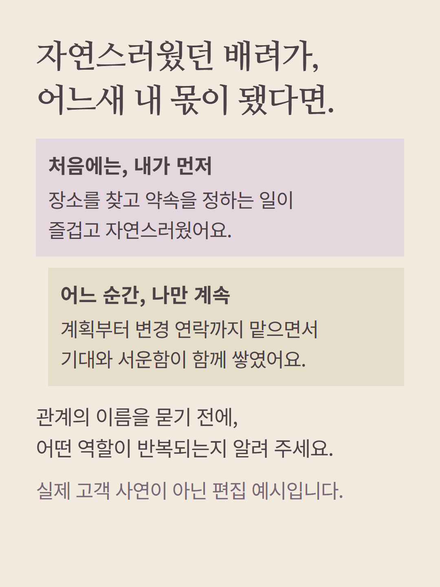
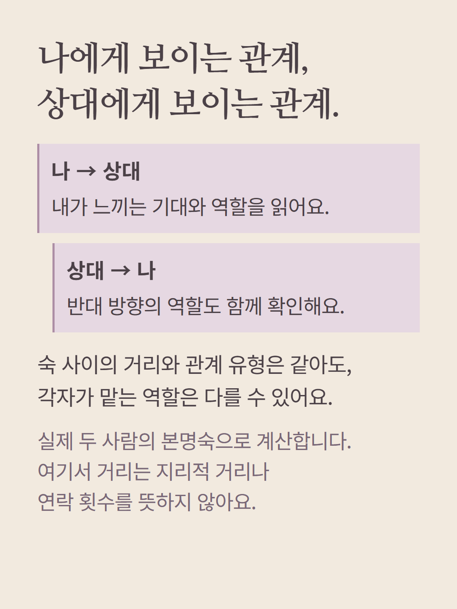
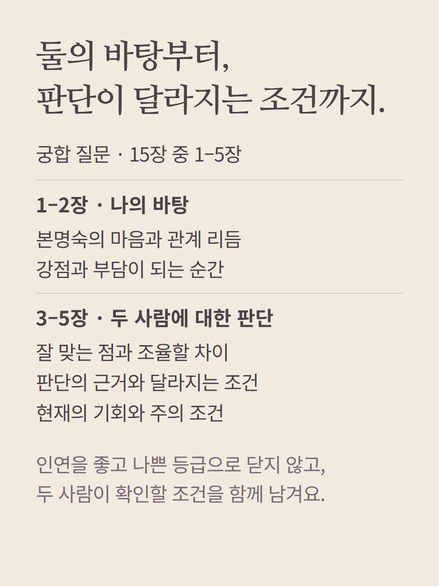
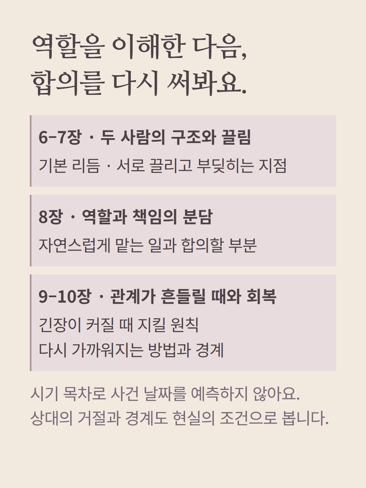
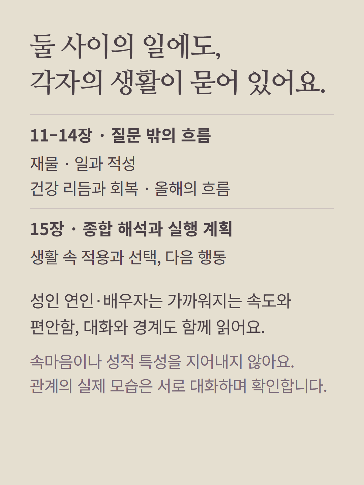
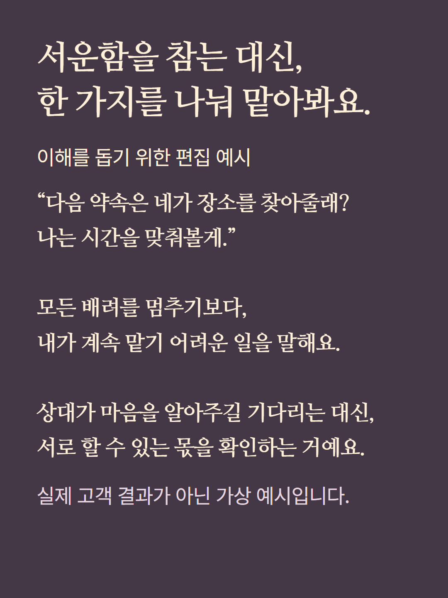
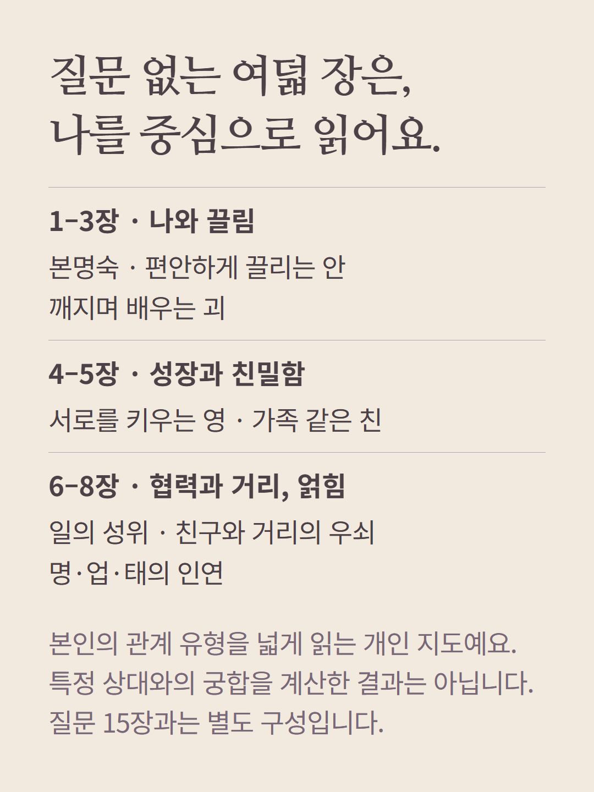
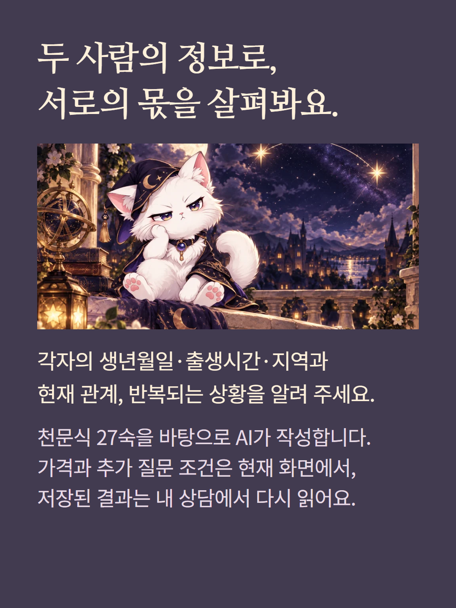

숙요 광어는 두 사람의 본명숙과 양방향 거리·역할을 비교하는 질문 상담입니다. 궁합 질문은 15장, 질문 없는 기본 개인 리포트는 8장으로 다릅니다. 기존 메뉴의 궁합·관계 유지 구성은 각각 11장이므로 선택 후 목차를 확인해 주세요. 천문식 27숙 계산에는 두 사람의 출생시간·지역·시간대가 필요합니다. 거리란 지리적 거리나 연락 빈도가 아닌 숙 사이의 관계 구분입니다. 관계 이름을 좋고 나쁜 인연의 등급으로 쓰지 않으며 날짜별 사건이나 속마음을 확정하지 않습니다. 성인 연인·배우자 친밀감은 편안함·속도·대화·경계로 읽습니다. 가상 편집 예시와 AI 작성 상담이며 가격·추가 질문 조건은 기존 화면을 따릅니다.